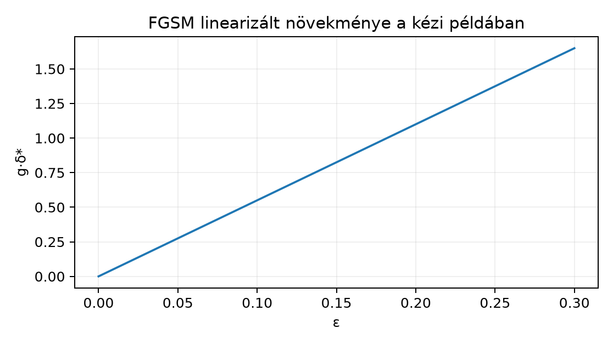

Ebben az egységben azt a munkafolyamatot rögzítjük, amellyel egy szakirodalmi eredményt szabályosan idézünk, adaptálunk vagy reprodukálunk. A cél nem retorikai: az olvasó az egység végén minden állításához meg tudja nevezni, melyik cikk, melyik változata, melyik szakasza tartalmazza, és hogy az illető helyet ténylegesen olvasta-e. Előismeretnek a 36.2. Ismétlések és eredménybizonytalanság eredménybizonytalansági nyelve, a 35.3. Perturbáció és adversarial példa FGSM-levezetése, a 32.3. Vision Transformer és hibrid felhasználás architektúra-összehasonlítási minta és a 24.3. Mixed precision és nagyobb batch numerikus adatrögzítési igénye szükséges.
Indító kérdés: csak egy cikk absztraktját ellenőrizted. Melyik mondat a legerősebb, amelyet bizonyítékkal alá tudsz támasztani a módszeréről? A várható válasz: legfeljebb „a szerzők az absztraktban azt állítják, hogy…”, semmi több; az egység ezt a különbséget teszi mérhetővé.
Elsődleges cikk (primary paper). Az a publikált vagy
preprint munka, amelynek konkrét állítását, módszerét vagy számszerű
eredményét vizsgáljuk. A hivatkozásban a változat
(version) rögzítendő: arXiv-kéziratnál az azonosító és a
v verziószám, konferenciaváltozatnál a kiadói rekord. Az
arXiv-kézirat éve nem feltétlenül azonos a konferenciamegjelenés évével;
ezt az egység könyvszintű szabályként rögzíti.
Szakasz (section). Az a részegység (szakasz, tétel, táblázat, ábra, függelék vagy definíció), amelyből egy átvett állítás származik. Egy állítás erőssége csak azzal a szakasszal együtt értelmes, amelyet ténylegesen olvastunk. Az [S01] jegyzetlap esetében például a 14.1.–14.4. egységek a konvolúciós alakokról szóló részt használták; ha valaki onnan egy hiperparamétert idéz, a pontos alszakaszt is idéznie kell. Eredeti ábra (original figure): a cikkben közölt grafikus megjelenítés. Reprodukcióban újrarajzolhatjuk a közölt adatokból vagy saját futtatásból, de a képfájlt engedély nélkül nem másoljuk; az új ábrán jelöljük a forrást és a „replot” (újrarajzolt) jelleget.
Olvasási/bizonyítékstátusz. Rögzítjük a bizonyítékok rendezett halmazát , ahol a felsorolás egyben a rendezés: egy elem annál erősebb, minél mélyebben ellenőriztük a kijelentést, azaz Egy állítás – az „olvasási igénymátrix” (claim ledger) sora – a következő négyes: , ahol a kijelentés, a hivatkozott szakasz, az olvasottság, pedig a legerősebb korrekten kijelenthető forma. A feltétel esetünkben azt jelenti, hogy ; ilyenkor csak a szerzői állításról szóló idézet lehet, a világ tényleges állapotáról szóló kijelentés nem.
Toy (játékméretű) adaptáció. A módszer matematikai magjának kisméretű, saját adaton futó megvalósítása, amely egy szűk mechanizmust ellenőriz. Az érvényességi köre pontosan a toy-tartomány; az eredeti cikk általános empirikus állítását nem igazolja. Reprodukció és replikáció – könyvünkben lokális munkadefinícióval dolgozunk, mert a szakterületek eltérő szótárat használnak. Reprodukció: ugyanazt az operatív protokollt (modell, adatfelosztás, metrika, tréningrecept) saját kóddal újra lefuttatjuk, és a számszerű kimenetet megadott toleranciával összehasonlítjuk (), vagy dokumentált negatív eltérést jelentünk. Replikáció: valamely protokoll-összetevőt (adat, implementáció, metrika) szándékosan megváltoztatunk, és azt vizsgáljuk, hogy a tudományos következtetés túléli-e a változtatást. A toy adaptáció egyik kategóriának sem szinonimája.
A 35.3. Perturbáció és adversarial példa az FGSM motivációját elsőrendű közelítésből vezette le; itt ezt az ismert, könyvön belüli eredményt egzakt lineáris lemmává emeljük, majd feltételeit a saját újrafelhasználás feltételeivel tételesen összehasonlítjuk.
Lemma (FGSM-lineáris lépés optimuma). Legyen , , és legyen komponensenként, konvencióval. Ekkor minden megengedett perturbációra
Egyenlőség pontosan akkor áll, ha minden indexre ; a koordináták tetszőleges értéket vehetnek fel. A maximalizáló tehát pontosan akkor egyértelmű, ha minden komponense nullától különböző.
Bizonyítás. (1) Minden megengedett -ra , mert minden tag legfeljebb az abszolútértékek szorzata. (2) A dobozfeltétel miatt , így . (3) A megadott mindkét egyenlőtlenséget tagról tagra egyenlőséggel teljesíti: minden -re. (4) Ha eléri a korlátot, akkor a -beli egyenlőség csak úgy állhat, ha minden egyes tag egyenlő a felső korlátjával, mert egyetlen tag sem lehet nagyobb annál. Tagra tehát egyszerre kell teljesülnie, hogy és hogy . Az első feltétel esetén pontosan akkor áll, ha és előjele azonos, azaz (mert ); esetén a tag értéke , és tetszőleges. Ezzel megkaptuk az állított egyenlőségi feltételt.
Az FGSM irányú lépés e lemma szerint a becsült veszteségnövekedést a megengedett dobozon maximalizálja – ha a linearizáció érvényes. Az eltérések tételes összevetése:
| Komponens | Eredeti levezetés (35.3. Perturbáció és adversarial példa) | Saját újrafelhasználás itt |
|---|---|---|
| Cél | veszteség növelése | ugyanaz |
| Fenyegetési modell | -doboz, | ugyanaz |
| Simaság | folytonos, deriválható veszteség | ReLU-töréspontoknál a linearizáció érvényét veszti; a lemma maga csak a lineáris tagra vonatkozik |
| Állítástípus | motivációs elsőrendű közelítés | bizonyított véges dimenziós optimum |
A második összevetés a jelen egység irodalmi esettanulmányára vonatkozik. A [P25] cikk esetében csak az arXiv-rekord és az absztrakt szintje ellenőrzött, ezért a könyv nem a szerzők konkrét protokollját, hanem az absztraktban jelzett kérdés saját toy adaptációját definiálja:
| Komponens | A cikkben jelzett (absztrakt szint) | Saját toy adaptáció |
|---|---|---|
| Tárgy | szaliencia-térképek paraméterérzékenységi sanity checkje | bemenetgradiens-nagyság egy kis GlyphLab CNN-en (a függelék A. A GlyphLab adatkészlet szakasza szerint) |
| Beavatkozás | paraméter-randomizálás jelzett gondolata | rétegenkénti, normatartó súlyscramble (a súlyok véletlen, azonos normájú cseréje) |
| Metrika | cikkbeli konkrét metrika nem olvasott | koszinusz-hasonlóság az dimenzióba lapított szaliencia-vektorokon |
| Kijelenthető eredmény | csak a szerzői kérdés neve | csak a toy-tartományra érvényes viselkedés |
Legyen (kiszámított gradienshármas), . Ekkor . A becsült növekedés . A lemma szerinti felső korlát ; a kettő egyezik, tehát a tényleg maximalizáló. Ellenőrző ellenpélda irányban: a perturbáció -vel vett szorzata .
Minimális kód (munkakönyvtár: a tananyag gyökerének lab/
könyvtára):
import numpy as np
g = np.array([3.0, -2.0, 0.5], dtype=np.float32)
eps = 0.1
delta = (eps * np.sign(g)).astype(np.float32)
gain = float(np.dot(g, delta))
korlat = float(eps * np.abs(g).sum())
print(delta) # [ 0.1 -0.1 0.1]
print(gain, korlat) # 0.55 0.55 (float32-ben 0.550000011920929)A futtatott kimenet (Python 3.12.3, NumPy 2.5.4, CPU):
[ 0.1 -0.1 0.1], majd
0.550000011920929 0.550000011920929 (a float32 számítás
kerekítésével; a kézi érték
).
A számított összefüggés ábrája; mivel a függvény lineáris, öt pont elég a jellegéhez:

A g=(3; -2; 0,5) vektorból a lemma képletével számolt szemléltetés, nem mérés.
Beadandó labortermék. (a) Kitöltött cikk-kivonat a lentebbi sablon szerint; (b) olvasási igénymátrix; (c) egy toy-reprodukciós tervprotokoll; (d) a fenti, képletből számolt saját ábra. A labor tudatosan nem állít teljes tanulmányolvasást; a hiányzó részek a kivonatban szerepelnek.
Sablon kitöltve a [P25] forrásra:
cim: "Sanity Checks for Saliency Maps"
szerzok: "Adebayo et al."
azonosito: "arXiv:1810.03292"
verzio: "nincs rögzítve (ellenőrizendő)"
ev: 2018
eleres: "https://arxiv.org/abs/1810.03292"
olvasasi_datum: "2026-10-20" # formátumpélda, a tényleges olvasás dátumával helyettesítendő
státusz:
- "cím, absztrakt és keresési kivonat: ellenőrizve"
- "verziószám: nem rögzített – nyitott auditpont"
- "módszertani szakasz, kísérleti táblák, függelék: nem olvasva"
sajat_kivonat: >
A cikk absztraktszinten a szaliencia-térképek sanity checkjeinek
kérdését veti fel; a precíz beavatkozási protokoll és metrika
ebben a kivonatban nem állítható.
felhasznalhato:
- "a vizsgált probléma megnevezése"
- "saját toy adaptáció motivációja"
nem_allithato:
- "a cikk konkrét tesztprocedúrájának reprodukciója"
- "a cikk minden következtetésének ellenőrzöttsége"A sablon szándékosan mutatja a hiányt: a saját szabály szerint a
hivatkozásnak verziószámot kell tartalmaznia, és amíg ez nincs
ellenőrizve, a hivatkozás nem teljes – ezért a verzio mező
és a státusz külön auditpontként jelöli. Az
olvasasi_datum értéke formátumpélda, nem valós olvasási
dátum: a tényleges naplóban a valódi olvasás napja szerepel.
Olvasási igénymátrix (négy oszlop):
| Állítás | Forráshely | Státusz | Maximum kijelenthető |
|---|---|---|---|
| A cikk sanity checkeket javasol szaliencia-térképekhez | absztrakt, arXiv-rekord | absztrakt olvasva | „a szerzők az absztraktban…” |
| Konkrét randomizálási protokoll | 2–4. szakasz | nem olvasva | nem állítható |
| Konkrét metrika és adat | kísérleti szakasz | nem olvasva | nem állítható |
| Saját toy metrika és beavatkozás | e könyv | levezetett | a toy-kísérletre érvényes |
Toy-reprodukciós terv (protokollterv, nem mért
eredmény). Bemenet: lab/data/images.npy,
labels.npy, split a metadata-ból;
float32, címke int64. Modell:
,
CPU, seed 20261020; a tanított modellt
jelöli, kimenete három logit. Szaliencia: legyen
a kiértékelt testkép valódi címkéje és
a keresztentrópia-veszteség; a gradiens abszolút értéke pixelenként
.
A bemenetnek egy csatornája van, ezért a csatornadimenzió elhagyható, és
nincs mit átlagolni rajta; az eredmény
-es,
soronkénti lapítás után
.
Beavatkozás a bemenet felől a kimenet felé haladva: a háló súlytenzorai
ebben a sorrendben
(első konvolúció,
),
(második konvolúció,
)
és
(lineáris réteg,
);
a
-edik
lépésben
()
a bemenet felőli első
súlytenzort cseréljük azonos Frobenius-normájú független Gauss-tenzorra
(a konvolúciós kernelt 4D tenzorként, a lineáris súlyt 2D mátrixként
kezelve). A Frobenius-norma a tenzor összes elemére vett négyzetösszeg
négyzetgyöke, azaz a tenzor kilapítása utáni euklideszi norma. Így a
paraméterek változnak, de az egyes rétegek Frobenius-normája azonos
marad;
a változatlan modellt jelenti. Metrika lépésenként:
,
ahol
a tanított modell,
a
szintig scramble-elt modell szaliencia-vektora ugyanazon a testképen;
nulla nevezőre a konvenció 0.0. Kiértékelés: 30 test-scene
(60 kép), páros összehasonlítás ugyanazon képpáron, 3 seed
minimumával/maximumával jelentve. Döntési heurisztika: ha a
mediánja a scramble mélységének növelésével nem nő, a 0-lépéses
numerikus azonosságkontroll 1.0-hez közeli, és a teljes
scramble
()
esetén a medián 0.9 alá esik, a toy szaliencia
paraméterérzékeny. Ez heurisztika, nem a [P25] cikk állításának
igazolása.
Az ábrához az előző szakasz
vektorából, a lemma zárt képletéből számolunk; az ábraaláírás ezért
„számított példa, nem mérés”. Aki a rögzített ellenőrző környezetben
újragenerálja, a kódot a lab/n143_figs.py fájlba írja, és
python lab/n143_figs.py paranccsal futtatja; a lényegi
adatvektor és a szorzat a fenti blokkban ellenőrizhető.
F1 fogalmi, nehézség 1. Input: a jelen egység -skálája. (a) Fogalmazd meg saját szavakkal a reprodukció és a replikáció lokális definíciójának különbségét. (b) Adj mindkettőre egy konkrét, a GlyphLab-környezetben értelmes esetet. (c) Ellenpélda-kontroll: miért nem replikáció egy toy adaptáció? Beadandó: a három válasz együtt, legfeljebb 12 mondat.
F2 levezetési, nehézség 2. Input: , . Vezesd le a lemma alapján: a szign-irányú értékét, a lineáris növekmény maximumát, a maximalizálók teljes halmazát és a nem egyértelmű koordinátát. Beadandó: a teljes levezetés és a halmaz pontos megadása.
F3 implementációs, nehézség 2. Input: a kézi példa.
Készíts fgsm_perturbation(g, eps) és
csim(a, b) függvényt float32-tenzorokra, a szövegbeli
konvenciókkal; eps<0 esetén ValueError;
üres/eltérő alakú bemenetre definiált hiba vagy konvenció. Ellenőrizd a
fenti $g$ vektorra a 0.55 értéket, és a
[1,2,3]/[-1,-2,-3] koszinusz-hasonlóságot.
Beadandó: futtatható kód és a tesztek futási állítása,
atol=1e-6 toleranciával.
F4 hibakeresési, nehézség 2. Input: „reprodukciós
jelentéstervezet” két hibával: (1) „Az absztrakt birtokában
kijelenthető, hogy a [P25] appendixének minden metrikáját ellenőriztük.”
(2) sim függvény
np.dot(a,b)/(np.linalg.norm(a)*np.linalg.norm(b)) alakú,
nulla bemenet esetén osztás nullával. Lokalizáld az okot, következményt;
add meg a javított mondatot és kódot; ellenőrizd a javítást egy nulla
vektorpárral. Beadandó: a négy elem (ok, következmény, javítás,
visszaellenőrzés).
F5 kísérlettervezési/transzfer, nehézség 3. Input: a laborbeli toy-reprodukciós terv vázlata. Írd ki a teljes protokollt a 36.2. Ismétlések és eredménybizonytalanság alfejezet szóhasználatának megfelelően: megfigyelési egység, split, baseline, változó tényező, metrika, seed-ismétlés, döntési szabály, érvényességi korlát. Ne feltételezz előre győztest; negatív eredmény elfogadható. Beadandó: protokollszöveg, amelyet egy másik hallgató futtatni tud.
F1. (a) A reprodukció azonos operatív protokoll saját kóddal, numerikus összehasonlítás toleranciával; a replikáció szándékosan változtat legalább egy protokoll-összetevőt, és a következtetés túlélését vizsgálja. (b) Reprodukció: a 37.4. Rétegből kis tanulómodell egységben felépített kis tanulómodell CNN-jének újratanítása azonos seeddel és azonos split mellett ugyanarra a val loss-értékre, a definíció szerinti abszolút toleranciával, , ; replikáció: ugyanaz a kérdés, de más adatgenerátor-seeddel készített GlyphLab-utánzaton vagy más implementációs nyelvű hálóval. (c) A toy adaptáció a módszer egyetlen mechanizmusát kicsinyíti, és jellemzően új adatot is használ; nem állítja elő a cikk eredeti kimeneti terét, ezért a replikáció előfeltétele – egy összehasonlítható következtetés – hiányzik.
F2. , . A lemma: , , . Maximum: . Egyenlőségi feltétel: , kötelező; szabad, mert . A maximalizálók halmaza: ; a második koordináta nem egyértelmű. Alakellenőrzés: minden elem , és .
F3. Javasolt ellenőrző munkamenet:
import numpy as np
def fgsm_perturbation(g, eps):
g = np.asarray(g, dtype=np.float32)
if eps < 0:
raise ValueError("eps nemnegatív kell legyen")
return (eps * np.sign(g)).astype(np.float32)
def csim(a, b):
a = np.asarray(a, dtype=np.float32).ravel()
b = np.asarray(b, dtype=np.float32).ravel()
if a.shape != b.shape:
raise ValueError("eltérő alak")
if a.size == 0:
raise ValueError("üres bemenet")
den = float(np.linalg.norm(a) * np.linalg.norm(b))
return float(np.dot(a, b) / den) if den > 1e-12 else 0.0
g = np.array([3.0, -2.0, 0.5], dtype=np.float32)
d = fgsm_perturbation(g, 0.1)
assert np.allclose(d, [0.1, -0.1, 0.1], atol=1e-6)
assert abs(float(np.dot(g, d)) - 0.55) < 1e-6
assert abs(csim([1.0,2,3], [-1.0,-2,-3]) + 1.0) < 1e-6
assert csim([0.0,0], [1.0,1]) == 0.0
try:
csim([], [])
except ValueError as e:
print("üres bemenet:", e)
else:
raise AssertionError("üres bemenetre ValueError kell")
print("ok", d)A float32 hozzávetőleg hét értékes decimális jegyet
tárol, ezért 0.1 környékén az atol=1e-6
biztonságos; ugyanezt a korlátot használjuk a szorzatra és a
koszinusz-hasonlóságra is (a gyökszámítás kerekítése ezen a példán nem
emeli a hibát az atol=1e-6 fölé).
F4. (1) Ok: a bizonyítékstátusz absztrakt szintű, a
kijelentés pedig függelékszintű állítást tesz, tehát a kijelentés
erőssége meghaladja
-t.
Következmény: hamis ellenőrzési látszat; a lektoráló nem tudja
megkülönböztetni az olvasott és a feltételezett részt. Javítás: „A [P25]
absztraktja alapján a cikk a szaliencia sanity checkjeinek kérdését veti
fel; a függelékbeli metrikákat nem tekintjük ellenőrzöttnek.” (2) Ok:
nulla saliencia-vektornál a nevező nulla. NumPy-ban a 0/0
hányados nan-t ad (és RuntimeWarning-ot), nem
inf-et; inf csak akkor adódna, ha a számláló
nem nulla, a nevező viszont nulla. Következmény: üres vagy nulla képű
teszteset tönkreteszi az átlagot, mert a nan továbbterjed.
Javítás: nevező-küszöb, nulla vektorra konvenció 0.0:
import numpy as np
def sim(a, b):
a = np.asarray(a, dtype=np.float64).ravel()
b = np.asarray(b, dtype=np.float64).ravel()
if a.shape != b.shape:
raise ValueError("eltérő alak")
den = float(np.linalg.norm(a) * np.linalg.norm(b))
if den < 1e-12:
return 0.0
return float(np.dot(a, b) / den)
assert sim([0, 0], [1, 1]) == 0.0
assert abs(sim([1, 2, 3], [-1, -2, -3]) + 1.0) < 1e-12
print("ok")Visszaellenőrzés: sim([0,0],[1,1]) == 0.0, és a javítás
nem változtatja meg a nem nulla vektorok eredményét (a
[1,2,3]/[-1,-2,-3] pár koszinusza
-1.0).
F5. A teljes protokoll: kérdés: a
PyTorch-bemenetgradiens-alapú szaliencia paraméterérzékeny-e a tanított
GlyphLab CNN-en. Megfigyelési egység: scene_id; a két
nézet nem független, ezért scene-szintű mediánt számolunk.
Split: 30 test-scene, train/val nem érintett; 3
training seed mindegyikére azonos split. Baseline:
ugyanazon képen kétszer kiszámolt szaliencia numerikus hasonlósága (várt
1.0). Változó tényező: scramble-mélység
a bemenet felől számolva:
a változatlan modell,
az első konvolúció,
az első két konvolúció,
a teljes háló (mindhárom súlytenzor) cseréje. Metrika:
páronkénti koszinusz-hasonlóság a tanított és a scramble-elt modell
között; seedenként scene-medián, majd seedek minimum–maximum sávja.
Döntés: paraméterérzékenynek nevezzük, ha a teljes
scramble medián 0.9 alá esik és a lépésenkénti medián nem
nő; a 0.9 küszöb itt előre rögzített heurisztika, nem
kívülről igazolt optimum. Korlát: az eredmény csak erre
az architektúrára, erre a gradiensalapú szaliencia-megvalósításra és a
GlyphLab grayscale 24×24 tartományára érvényes; emberi
magyarázatminőséget nem állítunk, ahogy a 35.2.
Magyarázat sanity check sanity-követelményei megkívánják. A negatív
eredmény (a szaliencia nem változik a scramble-re) is lektorálható
eredmény, ha a baseline numerikus azonosságkontroll 1.0
maradt. A tanítás a 24.4. labor AdamW-receptjével történik
(,
weight decay
,
StepLR
epochonként
,
batch 16, 20 epoch); az erőforrás CPU, három seed és négy
scramble-szint.
A tipikus tévedés: egy absztraktból nem állítható a teljes módszer és függelék ellenőrzése. Az ellenpélda formális alakja: az absztrakt bizonyítékhalmaz a szakaszszintű állítások halmazának csak valódi részét támasztja alá; a „a függelék reprodukálva van” kijelentés -beli elem, amelyre , tehát az állítás nem következik a bizonyítékból. A tévedés gyakorlati jele, ha a jelentésben nem különül el a „a szerzők azt írják” és a „mi ellenőriztük” mondattípus.
Önellenőrzés: minden átvett állításomhoz van-e source, version, section és ? Ahol , ott a legerősebb megfogalmazást használtam-e? Reprodukciós tervemben rögzítettem-e a dtype-ot, seedet és splitet? Kulcs. Mindhárom kérdésre igen a helyes válasz: minden átvett állításhoz source, version, section és tartozik; esetén a legerősebb megfogalmazást használjuk; a reprodukciós terv rögzíti a dtype-ot, a seedet és a splitet. Visszatekintés: 36.2. Ismétlések és eredménybizonytalanság szerint a becsült hatás intervallumához ki kell mondani a mintavételi modellt; az [S02] oldal a mintaátlag konfidenciaintervallumának feltételeit sorolja fel, és az intervallum csak ezek mellett értelmezhető. A 35.3. Perturbáció és adversarial példa FGSM-je csak a fenyegetési modell -dobozán belül értelmes; a súlyrandomizálás egészen más beavatkozás, nem keverendő az adversarial perturbációval. A 24.3. Mixed precision és nagyobb batch óta tudjuk, hogy a reprodukciós protokollba a BatchNorm/dropout jelenlétét és az AMP (mixed precision, vegyes pontosságú számítás) állapotát is fel kell venni: a BatchNorm train módban batchfüggő statisztikát használ, a dropout viszont nem batchfüggő, hanem tanítási módban véletlen maszkot alkalmaz (eval módban kikapcsol), és az AMP-állapot a numerikus pontosságot változtatja meg, nem a batchtől függ.
A szakirodalmi reprodukció attól lektorálható, hogy minden állítás mögött négy adat áll: forrás, változat, szakasz és olvasottsági szint. A reprodukció azonos protokoll saját kóddal és toleranciával való újrafuttatása; a replikáció szándékosan változtat összetevőt, és a következtetést vizsgálja; a toy adaptáció kicsinyített mechanizmus-ellenőrzés, egyik sem. Az FGSM szign-irányú lépésére bebizonyítottuk, hogy az -dobozon a linearizált növekmény pontos optimuma, értéke . A [P25] esettanulmány megmutatta, hogyan készül cikk-kivonat úgy, hogy az absztrakt szintű tudást nem füllentjük szakaszszintű ellenőrzéssé; a hiányok a forrásaudit nyitott kérdései maradnak.
A 36.4. IX. ellenőrző pont: lektorálható modellállítás IX. ellenőrző pont ezt az igénymátrixot kéri számon: egy saját modellállítást úgy kell bemutatni, hogy a fogalmi, numerikus, kísérleti és forráseredet-kapuk mindegyike ellenőrizhető legyen. Az itt elkészített kivonat- és protokollsablon a beadandó jelentés váza.
Felhasznált források: